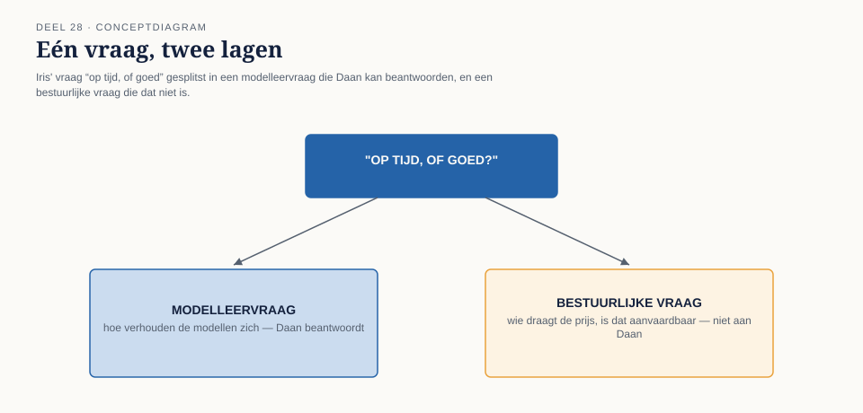
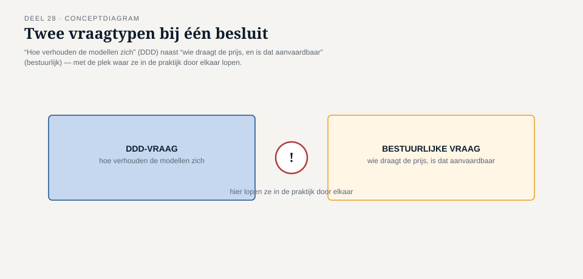
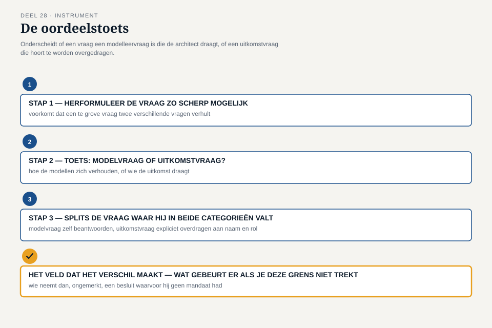
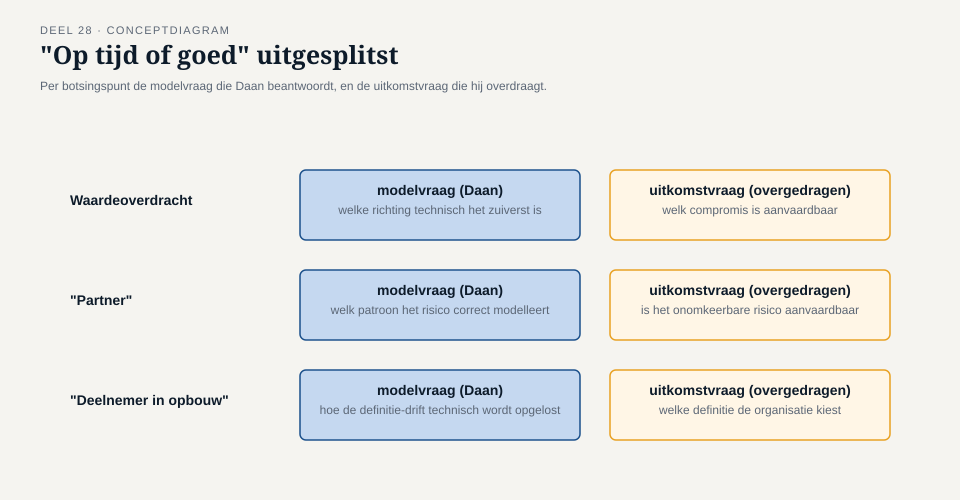

Deel 28 — Oordeel: wanneer je géén DDD toepast, en hoe je die grens verdedigt
Reader · Ductus-cursus Domain-Driven Design · niveau 3 (expert) · deel 28 van 30
28.1 Waar dit deel over gaat
Deel 27 eindigde zonder besluit, met opzet — en met een vraag die Loes hardop stelde en niemand die dag beantwoordde: wie zegt straks welke prijs de organisatie kiest, en waarom die eerlijk is. Iris nam die vraag mee, en dit deel opent op het moment waarop zij hem, een week later, aan Daan alleen stelt — niet aan het team, aan hém — in een vorm die scherper is dan de kamer van deel 27 ooit was: “op tijd, of goed. Ik wil van jou horen wat je durft te verdedigen, niet wat de kamer als geheel ergens tussenin heeft laten hangen.”
Daan voelt de verleiding om de vraag als een DDD-vraag te behandelen — nóg een richtingenkaart, nóg een botsingspunt uitgewerkt. Dit deel legt bloot waarom die verleiding zelf de fout is die het moet leren herkennen. Niet elk onderdeel van de Kustveer-opgave is een modelleervraagstuk. Sommige delen ervan zijn dat wel, en DDD beantwoordt ze scherp en verdedigbaar. Andere delen zijn bestuurlijk, actuarieel of politiek van aard, en geen enkele architectuurtechniek — hoe zorgvuldig ook toegepast — maakt ze tot iets anders. Een architect die dat onderscheid niet maakt, doet twee dingen tegelijk fout: hij belooft een oplossing die zijn instrument niet kan leveren, en hij ontneemt de mensen met het echte mandaat — het bestuur, Loes namens de achterban, Sigrid Palm namens DNB — de kans om de vraag te beantwoorden die eigenlijk van hen is.
Dit deel sluit terug op deel 1: de complexiteitstoets die daar bepaalde óf een domeinonderdeel de investering van DDD rechtvaardigde. Hier gaat de vraag dieper. Niet “is dit domeinonderdeel complex genoeg voor DDD”, maar “is dit hele vraagstuk, of een deel ervan, eigenlijk wel een vraagstuk dat een domeinmodel kan oplossen — of verhult de modelleertaal een besluit dat hoort te worden genomen door mensen met een ander soort mandaat dan een architect heeft?” Dezelfde discipline, nu toegepast op het zwaarste geval dat deze cursus kent: een fusie tussen twee organisaties, negen maanden voor een onomkeerbare deadline.
Aan het eind van dit deel kun je:
- uitleggen waarom “dit lossen we op met een context-mappingpatroon” soms een schijnoplossing is voor een vraagstuk dat geen modelleervraagstuk is;
- onderscheiden welk deel van een architecturaal geschil DDD daadwerkelijk kan verdedigen, en welk deel buiten het mandaat van een architect valt;
- met de oordeelstoets een besluit ontleden in het deel dat je als architect verdedigt en het deel dat je, met naam, overdraagt aan wie het wél mag beslissen;
- een grens — “dit is hier geen DDD-oplossing, en hier is waarom” — hardop en onderbouwd verdedigen tegenover bestuur, actuaris en toezichthouder, zonder dat het aanvoelt als ontwijken.
28.2 De casus: Iris, en de vraag die niet verdwijnt
Uit het casusdossier: onder toenemende tijdsdruk, met Sigrid Palm namens DNB die vanaf dit deel meekijkt, moet het team leren wanneer het géén DDD-oplossing forceert.
Iris’ vraag (“op tijd, of goed”) laat Daan drie dagen niet los. Hij doet wat hij in niveau 2 heeft geleerd: hij probeert het als een modelleervraagstuk te herformuleren. Hij tekent, alleen aan zijn bureau, een vierde richtingenkaart — deze keer niet voor één botsingspunt, maar voor de vraag zelf: wat kost “op tijd”, wat kost “goed”, wie draagt welke prijs. Halverwege stopt hij. Wat hij tekent is geen architectuurkeuze. Het is een poging om, met de vorm van een DDD-instrument, een besluit te nemen dat niet aan hem is.
Hij brengt dat inzicht mee naar het volgende overleg, waar voor het eerst ook Sigrid Palm aanschuift — de DNB-vertegenwoordiger die sinds de melding van de overname bij het implementatieplan betrokken is. Haar eerste vraag gaat niet over aggregates of patronen. “Ik lees in uw dossier drie botsingspunten en drie richtingen per botsingspunt. Wat ik nog niet lees, is een antwoord op de vraag die ík moet kunnen beantwoorden aan mijn eigen toezichthouder: is de datakwaliteit van de ingevaren Kustveer-populatie, ongeacht welke richting u kiest, aantoonbaar geborgd? Dat is geen vraag over welk patroon u het mooiste vindt.”
Daan herkent, hardop, twee vragen door elkaar. “Er zit hier een vraag in die ik kan beantwoorden: is ons model, welke richting we ook kiezen, scherp genoeg afgebakend om datakwaliteit te kunnen toetsen? Dat is een modelleervraag, en die kan ik u vandaag beantwoorden. Er zit ook een vraag in die ik niet kan beantwoorden: welke richting we kiezen, en of het aanvaardbaar is dat sommige Kustveer-deelnemers daarbij tijdelijk of blijvend iets verliezen. Dat is geen modelleervraag. Dat is een vraag voor het bestuur, met Loes erbij, en uiteindelijk voor u als toezichthouder om te beoordelen of het proces waarmee wij die vraag hebben laten beantwoorden, deugt.”
Iris kijkt hem aan. “Dat is het eerste antwoord dat je me geeft dat niet probeert om het hele probleem voor mij op te lossen. Ga door.”

28.3 Waarom “we lossen het op met een patroon” soms een schijnoplossing is
Niveau 2 leerde context mapping als instrument om een relatie tussen modellen bewust te kiezen. Deel 27 breidde dat uit naar drie richtingen voor een botsing tussen twee organisaties. Beide keren was de vooronderstelling dat het probleem, na het juiste patroon of de juiste richting, daadwerkelijk is opgelost — een technisch-conceptuele keuze die de kwestie sluit. Bij de Kustveer-overname klopt die vooronderstelling maar voor een deel, en dit deel legt uit waarom.
Een context-mappingpatroon, of een van de drie richtingen uit deel 27, beantwoordt de vraag hoe twee modellen zich tot elkaar verhouden: welke kant leidend is, waar de vertaling plaatsvindt, wie welke taal blijft spreken. Het beantwoordt niet de vraag of het aanvaardbaar is dat die verhouding, in de praktijk, een groep mensen iets kost — en als dat zo is, wie daarover mag beslissen. Die twee vragen liggen dicht op elkaar, en juist daarom is het zo verleidelijk om ze door elkaar te laten lopen: een architect die “we kiezen richting C, tijdelijk conformist” zegt, heeft ogenschijnlijk een architecturale keuze gemaakt. In werkelijkheid heeft hij, zonder het hardop te zeggen, ook een bestuurlijke keuze gemaakt: dat het acceptabel is dat een deel van de Kustveer-deelnemers, voor onbepaalde tijd, een recht verliest dat ze bij hun eigen fonds wél hadden. Die tweede keuze hoort niet stilzwijgend mee te liften op de eerste.
Dit is de kern van het oordeel dat dit deel leert vellen: een besluit dat zich laat verwoorden in DDD-taal, is daarmee nog geen besluit dat DDD mag nemen. De taal van patronen en richtingen is precies en bruikbaar voor het deel van het probleem dat over modelgrenzen gaat. Zodra de taal wordt ingezet om ook te beslissen wie de rekening betaalt, is DDD niet meer aan het modelleren — het is, onbedoeld, aan het besturen, met een instrument dat daar niet voor gemaakt is en waarvoor de architect geen mandaat heeft.
Vergelijk dit met wat deel 1 leerde over de andere kant van dezelfde fout. Daar was het risico dat een team DDD inzet waar het niet nodig is — zwaar gereedschap op een simpel probleem. Hier is het risico net zo reëel, maar tegengesteld: een team dat DDD-taal gebruikt om een probleem lichter te laten lijken dan het is — een bestuurlijk-politiek vraagstuk verpakt als een architectuurkeuze, zodat niemand het meer als bestuurlijk hoeft te erkennen. Beide zijn vormen van hetzelfde grondfout: het instrument wordt ingezet buiten het domein waarvoor het is gemaakt, met als verschil dat de eerste fout onderpresteert en de tweede fout overclaimt.

28.4 Wat DDD wél, en wat DDD niet kan verdedigen bij Kustveer
Om het onderscheid van §28.3 werkbaar te maken, splitst dit deel de volledige Kustveer-opgave in twee lagen.
Wat DDD kán verdedigen
- Of de drie botsingspunten (deel 27) volledig en scherp zijn afgebakend — heeft het team alle plekken gevonden waar de modellen daadwerkelijk verschillen, of zijn er nog verborgen aannames die pas bij invoering aan het licht komen?
- Of elke van de drie richtingen technisch correct is uitgewerkt — beschermt de anti-corruption layer daadwerkelijk het kernmodel; is de shared kernel-variant daadwerkelijk één, consistent gedragen model en geen schijnfusie met twee stille uitzonderingen; is de conformist-relatie expliciet en traceerbaar, niet stilzwijgend weggemoffeld in code die niemand meer als tijdelijk herkent.
- Of het model, ongeacht de gekozen richting, aantoonbaar toetsbaar is op datakwaliteit — precies de vraag die Sigrid Palm in §28.2 stelt, en een vraag die zuiver binnen het architecturale mandaat valt.
- Of de taal van de drie richtingen zelf scherp en eerlijk is — noemt het team “tijdelijk conformist” ook hardop wat het kost, of verzacht de term zelf al het besluit?
Wat DDD niet kan verdedigen
- Welke richting wordt gekozen. Dat is, zoals deel 27 al liet zien, een besluit dat draagvlak, mandaat en verantwoording vraagt van bestuur, actuaris en de vertegenwoordiger van de overgenomen populatie — geen architecturale uitkomst.
- Of het verlies dat een richting met zich meebrengt, aanvaardbaar is. Dat is een normatieve, geen technische vraag, en het antwoord verschilt per rol: wat voor Iris aanvaardbaar is binnen de deadline, hoeft dat voor Loes namens de achterban niet te zijn.
- Of “op tijd” zwaarder mag wegen dan “goed.” Dit is precies Iris’ vraag uit §28.2, in volle scherpte: geen architectuurvraag, hoe overtuigend een architect ook kan uitleggen wat elke keuze kost.
- Of Sigrid Palms toezichthoudende oordeel over het implementatieplan positief uitvalt. Een architect kan aantonen dát datakwaliteit toetsbaar is; hij kan niet namens DNB beoordelen of dat voldoende is.
De grens tussen deze twee lijsten is niet altijd scherp bij eerste lezing — en dat is precies waarom dit deel een instrument nodig heeft in plaats van een vuistregel. Sommige vragen, zoals Sigrid Palms eerste vraag in §28.2, lijken op het eerste gezicht in de tweede lijst thuis te horen en blijken, na ontleding, deels in de eerste te vallen.

28.5 De oordeelstoets
De oordeelstoets is het instrument van dit deel: voor een gegeven besluit of vraag ontleedt hij welk deel een modelleervraagstuk is dat de architect zelf mag en moet beantwoorden, en welk deel een bestuurlijk, actuarieel of politiek vraagstuk is dat hij moet herkennen, benoemen, en gericht overdragen — zonder het probleem daarmee van tafel te vegen.
Stap 1 — Herformuleer de vraag zo scherp mogelijk
Voordat je kunt oordelen wat voor soort vraag je voor je hebt, moet de vraag zelf scherp staan. “Wat doen we met Kustveer” is te vaag om te ontleden; “welke richting kiezen we voor de partnerdefinitie, gegeven dat richting C tijdelijk een groep deelnemers zonder erkenning laat” is scherp genoeg om te toetsen. Dit is dezelfde discipline die deel 2 al leerde bij ubiquitous language: een vage vraag verhult bijna altijd waar het echte besluit zit.
Stap 2 — Toets: is dit een vraag over hoe de modellen zich verhouden, of over wie de uitkomst draagt?
Twee sub-vragen, apart te beantwoorden:
- Modelvraag: verandert het antwoord op deze vraag de structuur, de grenzen, of de consistentie van het domeinmodel? Zo ja: dit hoort (mede) bij de architect.
- Uitkomstvraag: verandert het antwoord op deze vraag wie, in de praktijk, iets wint of verliest — een recht, een bedrag, een erkenning — en is er geen neutraal antwoord dat voor iedereen even gunstig is? Zo ja: dit hoort niet bij de architect alleen.
Een vraag kan, zoals §28.4 al liet zien, in beide categorieën tegelijk vallen. Dat is geen fout van de toets — dat is precies de plek waar stap 3 nodig is.
Stap 3 — Splits de vraag waar hij in beide categorieën valt
Voor elke vraag die in stap 2 aan beide kanten “ja” scoort: schrijf de modelvraag en de uitkomstvraag apart op, zoals Daan in §28.2 deed. Beantwoord de modelvraag zelf, met dezelfde onderbouwing die niveau 2 en deel 27 al vroegen. Formuleer de uitkomstvraag als een expliciete, aan een naam en een rol gerichte overdracht: niet “dat is niet aan mij”, maar “dit is de vraag, dit is waarom hij niet aan mij is, en dit is bij wie hij wel hoort te liggen.”
Het veld dat het verschil maakt — Wat gebeurt er als je deze grens niet trekt?
Als je deze vraag toch als een modelleervraag behandelt — een patroon kiest en het daarbij laat — wie neemt dan, zonder het te weten, een besluit waarvoor hij geen mandaat had, en wie merkt dat pas als het te laat is om terug te draaien?
Dit veld is waarom de oordeelstoets niet vrijblijvend is. Een architect die de grens niet trekt, neemt het bestuursbesluit sluipenderwijs zelf — niet uit overmoed, meestal, maar omdat de taal van het vak (patronen, richtingen, aggregates) zo natuurlijk aanvoelt dat de sprong naar een normatief oordeel onopgemerkt blijft. Bij Kustveer is het antwoord op dit veld concreet: als Daan “tijdelijk conformist” kiest zonder het bestuur en Loes expliciet te laten meebeslissen over de aanvaardbaarheid van het verlies, heeft hij, in de praktijk, namens 14.000 mensen een besluit genomen waarvoor hij geen mandaat had — en dat wordt pas zichtbaar op het moment dat een overleden deelnemers partner geen erkenning krijgt, wanneer het te laat is om het te herstellen.

28.6 Terug naar de casus: Daans antwoord aan Iris
Met de oordeelstoets doorloopt Daan, samen met Vera, Karsten en Foppe, de vraag die Iris hem stelde: op tijd, of goed. Foppe, die zoals altijd geen inhoudelijke positie inneemt, begeleidt het proces wel scherp: “Voordat je Iris antwoord geeft — is ‘op tijd of goed’ zelf al scherp genoeg geformuleerd, of verhult die tegenstelling twee heel verschillende vragen?”
De groep ontdekt, na stap 1, dat “op tijd of goed” zelf te grof is. Uitgesplitst naar de drie botsingspunten uit deel 27 blijkt het antwoord per punt anders te liggen. Bij waardeoverdracht is er, zoals Thijs’ doorrekening al liet zien, geen richting die op korte termijn zowel snel als voor iedereen gunstig is — hier is “op tijd” onvermijdelijk een compromis, en de modelvraag (welke richting technisch het zuiverst is) en de uitkomstvraag (welk compromis aanvaardbaar is) vallen na splitsing redelijk overzichtelijk uiteen: Daan levert een heldere technische vergelijking, het bestuur en Thijs moeten de knoop doorhakken. Bij “partner” ligt het scherper: de oordeelstoets legt bloot dat een snelle keuze voor richting C hier niet alleen een uitkomstvraag raakt maar een onomkeerbaar risico creëert — en dat dat onderscheid, niet de snelheid op zich, is waarom Daan hier extra voorzichtig adviseert om géén overhaaste modelmatige “oplossing” te forceren voordat het bestuur de aanvaardbaarheid van dat risico expliciet heeft gewogen.
Als Daan zijn antwoord aan Iris presenteert, kiest hij niet tussen “op tijd” en “goed” — hij legt uit waarom die keuze, zoals gesteld, geen architecturale vraag is, en welke drie deelvragen wél bij hem liggen en al beantwoord zijn. “Ik kan u vandaag zeggen dat ons model, voor alle drie de richtingen, technisch scherp genoeg is om te bouwen en om aan Sigrid te laten zien dat de datakwaliteit toetsbaar is. Ik kan u niet zeggen of het bestuur het verlies bij ‘partner’ aanvaardbaar vindt als we voor snelheid kiezen. Dat is niet ontwijken — dat is precies het onderscheid dat voorkomt dat ik, zonder het te beseffen, een besluit namens u en het bestuur neem.”
Iris is stil, langer dan Daan gewend is van haar. “Dat is niet het antwoord dat ik verwachtte toen ik de vraag stelde. Het is wel het antwoord dat ik nodig had.” Sigrid Palm, die de sessie heeft bijgewoond, voegt eraan toe: “Dit is voor het eerst dat ik in dit dossier een architect zie die het verschil maakt tussen wat hij kan aantonen en wat hij niet kan beslissen. Dat verschil is precies waar ik in mijn eigen beoordeling naar zoek — niet of jullie de perfecte oplossing hebben, maar of jullie weten wélk deel daarvan geen technische vraag is.”

28.7 De boog naar deel 1, nu op fusieschaal
Dit deel sluit, zoals het opzetdocument aankondigde, terug op de complexiteitstoets uit deel 1. Daar bepaalde het team of één domeinonderdeel van het Nabestaandenloket — het vaststellen van recht op partnerpensioen versus het bijwerken van een adres — de investering van DDD rechtvaardigde. De vraag was toen: is dit domeinonderdeel complex genoeg?
Hier is de vraag omgekeerd en groter: is de hele fusieopgave tussen Meridiaan en Kustveer eigenlijk wel, of geheel, een modelleervraagstuk? Het antwoord dat dit deel oplevert is noch “ja, dus DDD lost het op” noch “nee, dus DDD is hier nutteloos” — het is precies het onderbouwde onderscheid dat de oordeelstoets biedt: een deel van de opgave (de scherpte van de modelgrenzen, de technische uitwerking van elke richting, de toetsbaarheid van datakwaliteit) is een modelleervraagstuk waar DDD het instrumentarium voor levert, en een ander deel (welke richting, wiens verlies aanvaardbaar is, of “op tijd” mag winnen van “goed”) is dat niet, en vraagt om een ander soort mandaat.
Dat onderscheid — niet “DDD overal” of “DDD nergens bruikbaar bij een fusie”, maar DDD precies daar waar de oordeelstoets het aanwijst — is het fundament waarmee Daan de masterproef van deel 30 ingaat. Wat hij daar zal moeten doen, is niet één ideale oplossing verdedigen, maar exact laten zien welk deel van zijn besluit hij als architect draagt, en welk deel hij bewust, met naam en reden, aan het bestuur, de actuaris en DNB heeft overgelaten.
28.8 Vooruitblik
Dit deel heeft het onderscheid geleerd waarop de rest van niveau 3 leunt: niet elk vraagstuk rond de Kustveer-fusie is een DDD-vraagstuk, en het oordeel over die grens — met de oordeelstoets als instrument — is zelf een vaardigheid die een architect moet beheersen, naast en niet in plaats van de modelleervaardigheden uit de vorige delen. Deel 29 oefent, met dit onderscheid als vast onderdeel van de voorbereiding, de echte vorm van het CPSA-A-examen: taakkeuze na een NDA, een schriftelijke uitwerking, een mondelinge verdediging voor twee examinatoren. Deel 30, de masterproef, is waar Daan — met de modelvragen beantwoord en de bestuurlijke vragen bewust overgedragen — zijn volledige besluit voor de boardsimulatie verdedigt.